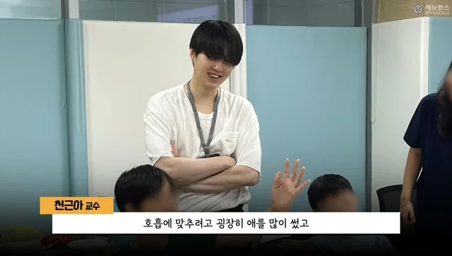
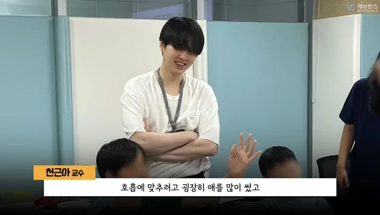

Após doação de SUGA, do BTS, hospital inaugura centro para pessoas com doenças raras
O rapper SUGA, do BTS, contribuiu para a criação de um centro especializado, beneficiando centenas de pacientes com condições raras e gerando repercussão mundial.
O rapper SUGA, integrante do BTS, realizou uma doação significativa para um hospital em Seul, fortalecendo ainda mais sua reputação de artista engajado em causas humanitárias. A contribuição financeira possibilitou a inauguração de um novo centro totalmente dedicado a pacientes com doenças raras — um grupo frequentemente esquecido pelo sistema de saúde por conta da baixa incidência e da complexidade dos tratamentos. O espaço foi projetado para oferecer não apenas cuidados médicos de ponta, mas também acolhimento emocional, criando um ambiente onde os pacientes se sintam vistos, ouvidos e apoiados em todas as etapas do tratamento.
Sobre o centro
O centro especializado, instalado dentro de um dos maiores complexos hospitalares de Seul, conta com
tecnologia de última geração e áreas específicas para diagnóstico,
tratamento e reabilitação. Equipamentos avançados
permitirão identificar
doenças raras com mais precisão e agilidade, reduzindo o tempo entre o aparecimento dos primeiros sintomas
e o início da terapia — algo que, para muitos pacientes, faz toda a diferença.
Além disso, a equipe é formada por médicos especialistas, enfermeiros,
fisioterapeutas, psicólogos e assistentes sociais
treinados para lidar com as particularidades de cada condição. O local também oferecerá programas de
apoio emocional para familiares, reconhecendo o impacto dessas doenças no núcleo
afetivo
dos pacientes.
A expectativa é que cerca de 500 pessoas sejam atendidas por ano, recebendo
acompanhamento contínuo, consultas regulares, suporte psicológico e acesso a
tratamentos
que antes só estavam disponíveis no exterior ou em instituições muito restritas.
Participação do artista
SUGA não compareceu à cerimônia de inauguração devido a outros compromissos, mas enviou uma mensagem em
vídeo para o evento.
Em seu discurso, afirmou: "Espero que este centro possa trazer esperança e conforto para todos
que
precisam.
A saúde é um direito de todos, e fico feliz em poder contribuir para que mais pessoas recebam o
cuidado
que merecem."
A colaboração do artista atraiu atenção internacional, reforçando como personalidades
globais
podem usar sua influência para promover causas sociais importantes. Fãs do mundo
inteiro celebraram a
ação, destacando que esse tipo de envolvimento não só inspira, mas também cria mudanças
concretas.
SUGA, que já realizou diversas doações ao longo da carreira — principalmente ligadas à
saúde, educação e apoio a vítimas de
desastres — continua
sendo um exemplo de responsabilidade social e empatia. O
gesto fortalece ainda mais
o vínculo entre o artista e a comunidade, mostrando que, além de um ícone musical,
ele também é um
agente de impacto positivo.
 

.jpg "Paciente no centro")